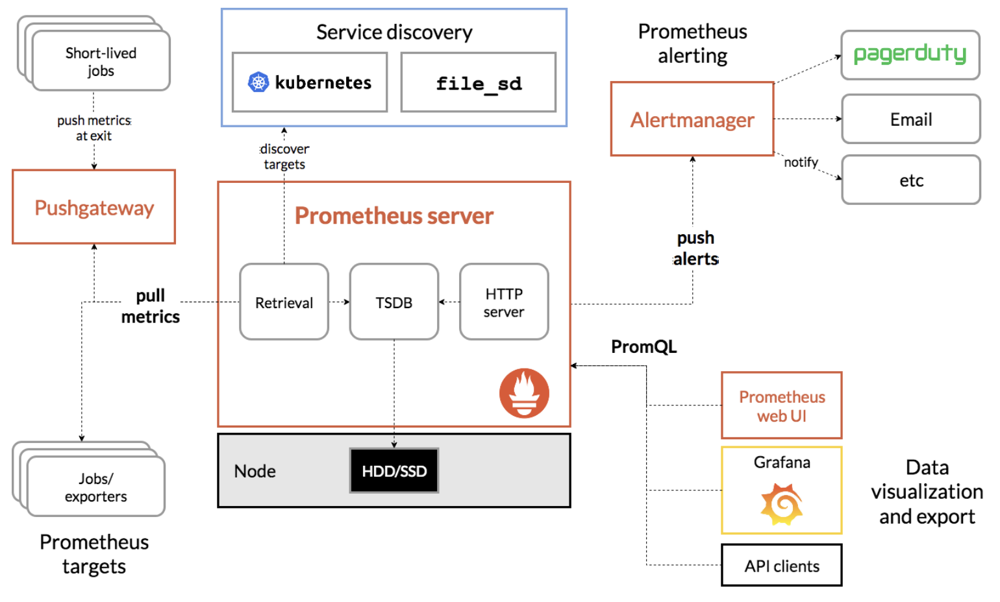

This blog will give a short introduction for the open source project Prometheus. It is based on the official website and an online book in Chinese, but I also added some explainations and understanding from myself to help any green hands to better understand it and its usage.
The first two parts will offer a brief intro to Prometheus. The third part will guide to download it and open the service.
What is Prometheus?
It is a toolkit for monitoring and alerting. It is open-source.
What is Monitor Toolkit?
A monitor, as it is, is used to check the status of its targets and make sure everything goes as planned and collect the running data. In order to become a good monitor for software, the following aspects are usually considered:
- Support a long-term analysis based on the history data collected
- Support a comparison analysis between two different version for the same software
- Alerting management. This means that the monitor should inform the programmer when strange things happen
- Help find the bugs and analyze them.
- GUI. The user can clearly view the data graph in a brower.
For traditional monitor systems, it focuses on the alerting function. In this case, they usually adopt the check & alarm model. In this model, the main software will be installed in one server, and the other various servers being monitored will install its plugins. The plugins will do the check and report back to the monitor center (the server with the software). Popular examples include Nagios and Zabbix.
However, different from the tranditional monitor model, Prometheus uses a different pull model. It does not dirctly serve the monitor target, but its main activities are to collect, store and provide query. In addition, an exporter is needed if you need to use it towards certain applications.
What is an exporter?
Exporters are programs to provide data in standard format to Prometheus. There are two kinds of exporters, one is direct collect and the other is indrect collect. For the applications which support Prometheus, their exporters are direct. For the other ones, you need to write a exporter using the client library provided and they are the indirect ones.
The popular exporters can be checked out here.
Architecture of Prometheus

Prometheus Server : Center
This part is resposible for the data collection, storage and retrieval. Users can set the targets being monitored in the static config file ( default is prometheus.yml) or use Service Discovery to dynamically monitor them (the blue bracket in the image).
For the storage, it is a time series database itself. It stores the time series collected to local disks, like the /data folder right next to the main program.
For the retrieval, it provided the PromQL language for data query and analysis. A web UI is also used for the visualization.
Exporter: The data collector
Exporter will expose the data collect endpoint to Prometheus Server via HTTP.
AlertManager：Alert managment
Users can use Prometheus to create alert rules. If certain rulers are met, an alert will be generated. The following procedures will be handled by the AlertManager such as sending an email or slack message to the users.
PushGateway
The discussion we have above assumes that exporter can directly offer the data to the prometheus, or they can comunicate directly. However, this is not always the case. Under situations where Prometheus cannot directly communicate with exporters, a pushGateway is needed as a tranfer center. The server will then get the data here.
Prometheus Install steps
-
Installing
Go to the official website and download the version you need. For example, I am using macOS, so I will download the darwin one.
-
Open:
unzip the files and open the folder. Here you should see a prometheus(.exe) and a prometheus.yml. The first one is the server program and the second is the default config file. Change the permission for the two files and run the first program
./prometheusThen open the brower and enter localhost:9090, you should see the UI for the software. Now you didn't edit anything, but in the default configuration, prometheus is monitoring itself.
-
Config:
Here we take node-export as an example. Node-exporter is used to collect data about the CPU usage, disk usage and so on. You can download it here. Then run it (It listens on port 9100, make sure the port is available).
Now we should add the node jobs to the prometheus configuation file to monitor it. Open Prometheus.yml and add the extra content:
scrape_configs: - job_name: 'prometheus' static_configs: - targets: ['localhost:9090'] # The added lines are as below - job_name: 'node' static_configs: - targets: ['localhost:9100']Then restart the prometheus server.
Now go to the brower and enter:
upyou should be able to see the following output:
up{instance="localhost:9090",job="prometheus"} 1 up{instance="localhost:9100",job="node"} 1Now you can check out for more query to explore the monitor.